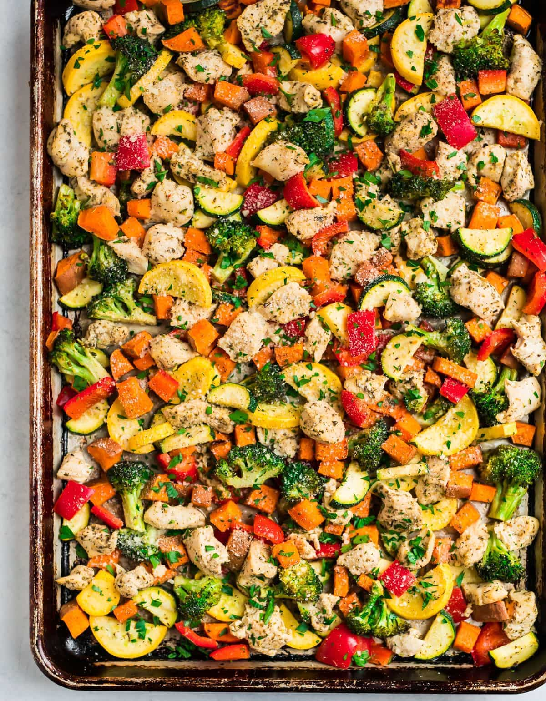

One Pan Chicken

Description
Here is another simple chicken dish. This might be the simpliest of them all as all you need to do is chop some veggies,
pour some olive oil on the pan and food, and... well thats about it. There is really no skill needed for this dish! Also, you
can mix and match veggies. Pick your favories, take out your least favorites, or just a bunch of one veggie. Lets check it out!
Ingredients
As stated previously, the veggies are up to what you find tasty, however these are recommended if you have no preference
- Potatoes (Any kind, just make sure it is scrubbed and diced)
- 1 1/4 teaspoons kosher salt
- 3/4 teaspoons black pepper
- 1 1/4 pounds boneless, skinless chicken breasts
- 1 head of broccoli (or more if you would like)
- 3-4 large carrots
- 1 zucchini
- 1 yellow squash
- 2 1/2 teaspoons of Italian Seasoning
- 1 teaspoon garlic powder
- 1 teaspoons onion powder
Instructions
- Place a rack in the center of the oven and preheat the oven to 400 degrees F. For easy cleanup, line a large,
rimmed baking sheet with foil. Lightly coat the foil with nonstick spray.
- Place the potatoes in a large bowl. Drizzle with 1 tablespoon olive oil and sprinkle with 1/4 teaspoon kosher salt
and 1/4 teaspoon black pepper. Toss to coat and then spread into a single layer on the baking sheet. Keep the bowl handy.
Bake for 10 minutes, or until the potatoes are just beginning to soften on the outsides but are still too firm to eat.
- Meanwhile, in the bowl that you used previously for the potatoes, place the chicken and veggies.
Drizzle with the remaining 2 tablespoons olive oil. Add the Italian seasoning, garlic powder, onion powder, and remaining
1 teaspoon salt and 1/2 teaspoon pepper. Toss to coat.
- Transfer the chicken and vegetable mixture to the sheet pan with the potatoes, using a spatula to spread everything into an fairly even layer
and stirring it a bit if needed.
- Return to the sheet pan to the oven and bake for 15 to 20 additional minutes, stirring once halfway through, until the chicken is cooked through and no
longer pink in the middle and the vegetables are tender but not mushy. (They won’t be browned and caramelized but will be delicious to eat.) Serve hot.